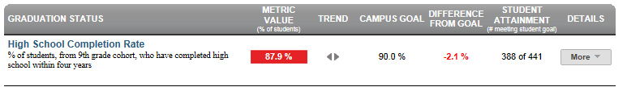

Dashboard Metrics


High School Completion Rate
Background
District Dashboard Metrics
As the ultimate goal of high school campuses is to graduate students ready for college within four years, many states are including a graduation rate metric into their dashboards. In addition, during focus groups conducted with educators, the High School Completion Rate metric was considered useful by 97% of those surveyed.
Primary Metric
- High School Completion Rate: percentage of students, from a ninth grade cohort, who have completed high school within four years
Related Metric
- High School Graduation Rate: percentage of students graduating within four years of entering the ninth grade.
User Interface
Dashboard Example
Figure 1 shows the High School Completion Rate metric as seen on the district dashboard.

Figure 1 High School Completion Rate
Status Definition
The High School Completion Rate metric displays the status of a group (cohort) of students after four years of high school.
The Status indicator is determined by district goals. The default is 90%.
Table 2 lists the Status indicators as seen on the district dashboard.
Metric Indicator | ||
Metric Name | Metric Indicator (a) | District Goal |
High School Completion Rate | Red (Percentage) = Not completed (no score) or completion of high school extended beyond 4 years Green (Percentage) = High school completion on time (within 4 years of entering 9th grade | 90% |
Trends
Table 3 defines the trend indicators for the High School Completion Rate metric.
Trend Indicators: Objective is to indicate High School Completion Rate | |||
| Up green | If the value for the current time frame is more than 5 percentage points higher than the prior time frame, then display a gray arrow trending upward. | |
| Unchanged | If the value for the current time frame is less than or equal to 5 percentage points higher or less than or equal to 5 percentage points lower, then display two gray arrows pointing outward indicating no direction. | |
| Down red | If the value for the current time frame is more than 5 percentage points lower than the prior time frame, then display a gray arrow trending downward. | |
The trend does not show for the first occurrence of a time frame since data is not available.
Periodicity
At a minimum, upload the data for this metric at least annually, prior to the beginning of the school year. Best practice is to upload data monthly to capture students transferring throughout the year.
Recommended Load Characteristics | |
Calendar | Throughout the school year |
Frequency of data load | Monthly |
Latency | Yearly |
Interchange schema | Interchange-StudentEnrollment.xsd |
Tooltips
The standard tool tips for the metric definition, column headers, and help functions display for this metric.
The following are tooltips specific to the High School Completion Rate metric:
- '+More' indicates drill down to view ‘High School Completion Rate by Grading Period’
 is ‘No change from the prior period'
is ‘No change from the prior period' is ‘Getting worse from the prior period’
is ‘Getting worse from the prior period’ is 'Getting better from the prior period'
is 'Getting better from the prior period'
Business Rules
Data Assumptions
- Completion rate can be computed anytime after graduation, but does not settle out until September 30th.
- Metric is computed for prior year.
- All students are assigned a graduation plan for grades 9-12.
- All students are assigned a cohort.
- Cohort consists of students who first attended 9th grade in 2004-2005.
- Any student who transferred into the 2004-05 cohort is added to it, and any student who transfers out of the 2004-05 cohort is subtracted from it.
Computed Values
Table 5 defines how values are calculated for this metric. The result of the calculation displays in the Status column on the district dashboard.
Table 5 Cohort for Ed-Fi High School Completion Rate
| Cohort: Currently enrolled students at time of last upload | |
| Cohort includes: | Cohort excludes: |
|
|
Metric Values | |
Graduated | Based on the 2004-05 cohort, this shows the percentage who received a high school diploma on time or earlier (by August 31, 2008) and is computed as follows: Number of students from the cohort who received a high school diploma by August 31, 2008 / Number of students in the 2004-05 cohort. |
GED | Based on the 2004-05 cohort, this shows the percentage who received a General Education Development certificate by August 31, 2008 and is computed as follows: Number of students from the cohort who received a GED / Number of students in the 2004-05 cohort. |
Continued High School | Based on the 2004-05 cohort, this shows the percentage still enrolled as students in the fall of the 2008-09 school year and is computed as follows: Number of students from the cohort who were enrolled for the 2008-09 school year / Number of students in the 2004-05 cohort. |
| Dropped Out (4 yr) | Based on the 2004-05 cohort, this shows the percentage who dropped out and did not return by the fall of the 2008-09 school year and is computed as follows: Number of students from the cohort who dropped out before the fall of the 2008-09 school year / Number of students in the 2004-05 cohort. |
Calculation Notes:
Metric is computed for prior year and can be computed anytime after graduation, but does not settle out until September 30.
Cohort = 9th grade cohort in the expected year of graduation who:
- Graduated (Leaver code 01) anytime over the last four years prior to Aug 31 of the current year
- Dropout (Leaver code 98) at any time over the last four years prior to Aug 31 of the current year (does not account for possible GED)
- Summer dropout (no show): of the prior 12th graders, completed prior year and not identified as a leaver, but is not enrolled in the next Fall school year (by the last Friday in September – Sept 30th can be practically used)
- Continuers (still enrolled in high school) – of the prior 12th graders, completed prior year and not identified as a leaver, but is enrolled in the next Fall school year (by the last Friday in September – Sept 30th can be practically used)
Excluded from the cohort are Leavers other than graduates (01) or dropouts (98)
Data Anomalies
Data Anomalies
Best practice is to footnote each anomaly.
Date of Refresh
Best practice is for the date of last data refresh to appear next the metric in the following format:
- (Through Spring Semester 2010)
Implementation Considerations
Student Identity
Maintaining a correct and consistent student identity is at the center of any education data system. Most systems use some sort of unique identifier. However, sometimes this identifier is entered incorrectly or sometimes different systems use different identifiers.
The UDM XML supports the interchange of multiple types of identifiers. The StudentReference is a complex type within the UDM to maintain the referential integrity of the student (that is, ensuring that the data associated with each student is accurately associated with the right student). The complex type of the student reference assists with implementing the accurate matching algorithm to identify a student by utilizing any of the individual attributes (e.g., Student Unique State ID, Student ID, Campus Local ID (with Campus ID), Name and Birth Date). For example, if the Student Unique State ID is unknown, you can find the student’s identity by their Student ID, First Name, Last Name and Birth Date.
Threshold
The Completion Rate threshold for the states can vary.
Cohort
A student who transfers into the cohort is one who, for example, moves into the cohort from another in-state high school or from out of state.
A student who transfers out of the cohort is one who, for example, moves to another in-state public high school; these students are then transferred into the cohort of the receiving high school and district. There are also students who move out of the state or out of the country, or students who transfer to private schools or who are home-schooled. These types of transfers cannot be tracked, and students who leave for these reasons are not included in completion rate calculations.
Students do not change cohorts even if they repeat a grade or skip a grade. If they begin with the 2004-05 ninth grade cohort, they remain with that cohort. This means, for example, that a student who started the ninth grade in 2004-05, but takes 6 years to graduate (i.e., in May 2010) is still part of the 2004-05 cohort; they are not switched to the 2006-07 cohort. This student is considered a continuing student, and counted as part of the Continued High School number for the class or 2008.
Dropouts are counted according to the dropout definition in place the year they drop out. The definition changed in 2005-06. Completion rates for classes in which the new dropout definition is being phased in (i.e., classes of 2006, 2007, 2008, and 2009) are not comparable to completion rates for prior classes, nor to each other.
Special Education students who graduate with an Individualized Education Program (IEP) are included as graduates.
This indicator is computed and reported for districts as well as for high schools that served grade 9 and either grade 11 or grade 12 in both the first year of the cohort and in the fall following the cohort's expected graduation. Campuses that only serve some of these grades or that have been in existence for fewer than five years do not show a completion rate.
- Dropouts do not account for those who later receive a GED.
- Does not account for any other exclusions such as TJPC or TYC facilities, migrant students who enroll by mid January, and students not eligible for FSP funding.
Completion Rate I
Completion rate 1= (Graduated + Continuers) / (Graduated + Continuers + Dropouts + Summer Dropout)
If in the 2010/2011 current school year, then Cohort = students entering 9th grade in the 2006/2007 school year (as indicated by transcript) who:
- Graduated anytime in the four years prior to the 2009/2010 school year (leaver code 01) – by Aug 31, 2010
- Dropped out anytime in the last 4 years prior to August 31stwith leaver code 98
- Summer dropout—of the 12th graders at the end of the 2009/2010 year with no leaver code and not enrolled in the 2010/11 school year as of Sept 30th, 2010
- Continuers—of the 12th graders at the end of the 2009/2010 year with no leaver code and enrolled in the 2010/11 school year as of Sept 30th, 2010
Note:
- Dropouts do not account for those who later received a GED.
- It also does not account for any other exclusions such as TJPC or TYC facilities, migrant students who enroll by mid January, students not eligible for FSP funding).
Computing Longitudinal Rates
The four student outcomes used in computing the longitudinal rates are:
(1) Graduated
- Based on the 2004-05 cohort, this shows the percent who received their high school diploma on time or earlier - by August 31, 2008. It is calculated as follows:
- Number of students from the cohort who received a high school diploma by August 31, 2008 divided by Number of students in the 2004-05 cohort*
(2) Received GED
- Based on the 2004-05 cohort, this shows the percentage who received a General Educational Development certificate by August 31, 2008. It is calculated as follows:
- Number of students from the cohort who received a GED divided by Number of students in the 2004-05 cohort*
(3) Continued High School
- Based on the 2004-05 cohort, this shows the percentage still enrolled as students in the fall of the 2008-09 school year. It is calculated as follows:
- Number of students from the cohort who were enrolled for the 2008-09 school year divided by Number of students in the 2004-05 cohort*
(4) Dropped Out (4-yr)
- Based on the 2004-05 cohort, this shows the percentage who dropped out and did not return by the fall of the 2008-09 school year. It is calculated as follows:
- Number of students from the cohort who dropped out before the fall of the 2008-09 school year divided by Number of students in the 2004-05 cohort*
- * The cohort in the denominator of the formulas shown above includes those students who graduated, continued in school, received a GED, or dropped out. It does not include data errors or leavers with the following leaver reason codes. See the following table (note that the leaver reason codes vary, based on year):
School Year | Leaver reason codes NOT included in the longitudinal rate calculations |
2004-05 | 03, 16, 19, 21, 22, 24, 30, 31, 60, 61, 63, 64, 66, 72, 78, 80, 81, 82, 83 |
2005-06 | 03, 16, 24, 60, 66, 78, 81, 82, 83, 85, 86 |
2006-07 | 03, 16, 24, 60, 66, 78, 81, 82, 83, 85, 86, 87 |
2007-08 | 03, 16, 24, 60, 66, 78, 81, 82, 83, 85, 86, 87 |
These four outcomes sum to 100% (some totals may not equal exactly 100% due to rounding).
Completion Rate Using AIES Reports
For the 2008-09 AEIS reports, the completion rate is shown three different ways:
(1) Completion/Student Status Rate
- This shows all of the above measures separately. The prior rates (class of 2007) are also shown.
(2) Completion Rate II (w/GED)
- This indicator sums together the first three of the above outcomes: the percent of students in the 2004-05 cohort who received their high school diplomas by August 31, 2008, those who received GEDs by August 31, 2008, and those who were still enrolled as high school students for the 2008-09 school year. This rate is used for determining the alternative education accountability ratings.
(3) Completion Rate I (w/o GED)
- This indicator sums together the first and third of the above outcomes: the percent of students in the 2004-05 cohort who received their high school diplomas by August 31, 2008 and those who were still enrolled as high school students for the 2008-09 school year. This rate is used for determining the standard accountability ratings.
Other Considerations
Dropout are counted according to the dropout definition in place the year they drop out. The definition changed in 2005-06. Completion rates for classes in which the new dropout definition is being phased in (i.e., classes of 2006, 2007, 2008, and 2009) are not comparable to completion rates for prior classes, nor to each other.
This indicator is computed and reported for districts as well as for high schools that served grade 9 and either grade 11 or grade 12 in both the first year of the cohort and in the fall following the cohort's expected graduation. Campuses that only serve some of these grades or that have been in existence for fewer than five years do not show a completion rate.
Special Education students who graduate with an Individualized Education Program (IEP) are included as graduates.
Aggregate Metric Inclusions and Exclusions of Special Education Students
Each campus's aggregate metrics may include or exclude the special education population, depending on the intended purpose for a specific metric and campus goal. This may affect the district metric.
Drill Downs
Drill Down Views
The dashboards include the option to see more detail that is associated with a specific metric. Table 7 lists the drill down views that are recommended for this metric.
| Campus List | List of campuses and whether or not they meet their goal for this metric for the specified period. |